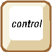

|

Page 6
Self-Regulation is another term for ‘self-control’, which is defined as the ability to
control one’s emotions, desires, and behaviors in order to reach a positive outcome.
Self-regulation is sometimes difficult because of the phenomenon that it is
important to ‘express how you feel’. While this may be partially true, the art to
finding the balance between expressing one’s feelings and avoiding unnecessary
tension is self-regulation.
Self-Regulation is a direct reflection of the type of pressure one is experiencing. There are three types of
pressure:
1.
Good Pressure: This type of pressure is the result of an aggressive yet non-critical and non-
harmful atmosphere. One aspires to be like the people around them. This motivation leads to
the acquisition of self-regulation.
2.
Bad Pressure: Bad pressure is the when the atmosphere is critical and harmful. One has no
motivation and loses self-regulation.
3.
No Pressure: When one is not experiencing any pressure, they tend to act based on emotion,
since there is no one to compare themselves to.
|